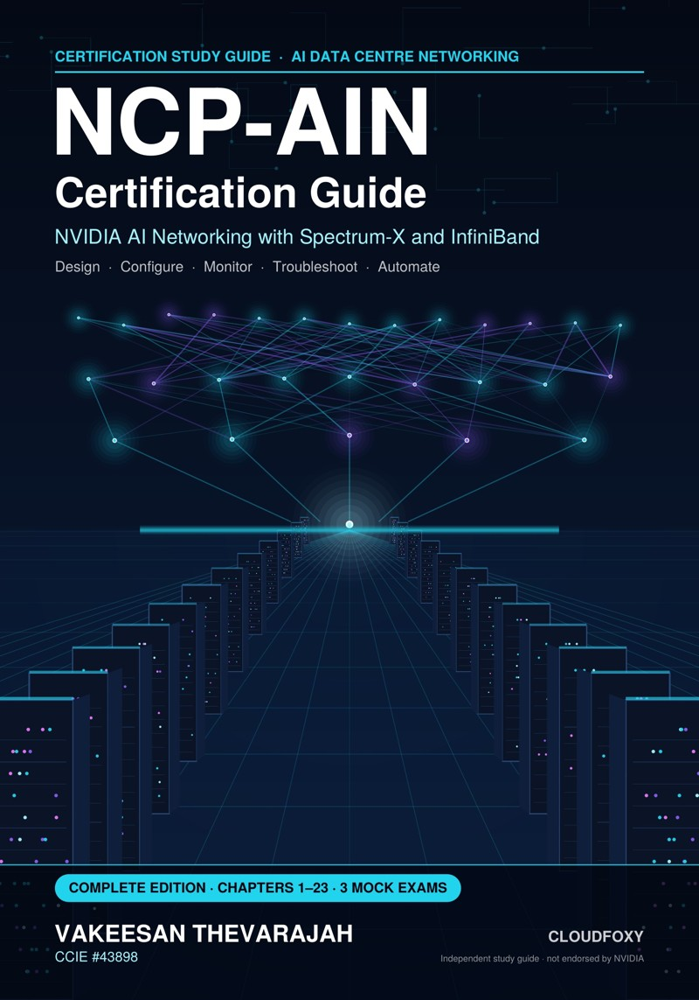

NCP-AIN · Free hands-on labs
Build the AI factory fabric. Pass the exam.¶
Fourteen free, step-by-step labs on NVIDIA DSX Air. You cover Spectrum-X Ethernet, lossless RoCE, EVPN, InfiniBand, Kubernetes and automation. They're the companion to the NCP-AIN Certification Guide.
Start the free labs Get the book
by Vakeesan Thevarajah · CCIE #43898 · published by Cloudfoxy Ltd

Start practising¶
-
Hands-On Lab Guide
You build the Helix AI factory in DSX Air, then configure it, break it and fix it. Everything runs on the free trial.
-
Flashcard deck
About 490 cards (front, back and chapter) for Anki, Quizlet or any flashcard app.
-
Lab files
The DSX Air topology (JSON), the InfiniBand simulator fabric and the OpenSM partitions used in the labs.
-
Free sample
The front matter, Chapter 1 with its Q&A pack, and Chapter 2 of the book.
Errata and updates¶
NVIDIA ships new software releases several times a year, so some commands will change after publication. The errata page lists confirmed corrections by edition, chapter and page.
Found an error? Report it here. You'll need a free GitHub account. Include the edition, the page and what you expected to see.
About the book¶
The book is available now on Leanpub (ebook), on Kindle and in paperback on Amazon (Volume I, Volume II). It covers every objective in NVIDIA's published NCP-AIN exam blueprint. It follows one running example, the Helix AI Factory, from start to finish. Each chapter has technical diagrams, a hands-on lab, a troubleshooting scenario and about 40 exam-style questions with explanations. It ends with three 75-question mock exams, a cram sheet, a command reference and a glossary.
Go from lab to certified¶
The labs show you how. The book explains why, and that's what the exam tests.
This is an independent study guide. It is not produced, sponsored or endorsed by NVIDIA Corporation. All practice questions are original. NVIDIA and NVIDIA product names are trademarks of NVIDIA Corporation. · Licence